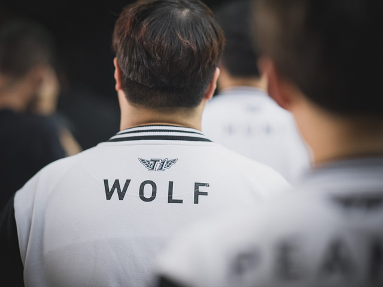
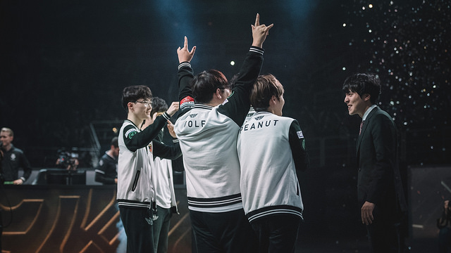
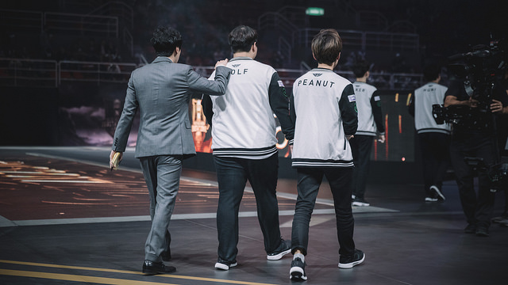
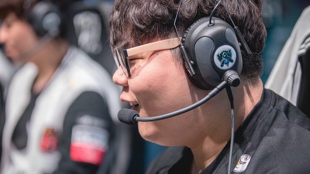

Tin nổi bật |
Tin nổi bật | September 4,2019 |
September 4,2019 | By: Hulkk
By: Hulkk
Mỗi tuyển thủ sẽ có một trải nghiệm khác nhau nhưng nhìn chung, tất cả đều bắt đầu tính đến đường lui ở quãng tuổi trên dưới 25. Dẫu vẫn có những trường hợp thi đấu lâu hơn thường lệ nhưng đa số họ vẫn chọn việc giải nghệ hoặc lùi về sau sân khấu với vai trò khác mỗi khi ở độ tuổi như vậy.
Thời gian trôi nhanh chỉ như 1 cái chớp mắt và khi chúng ta chưa kịp nhận ra nó, những ảnh hưởng của nó đã đến tự bao giờ. Khi một vận động viên quyết định phải nói chia tay, đằng sau nó là một nỗi buồn không thể kể siết bởi nó giống như một lời thú nhận rằng “tôi không còn được như ngày xưa nữa rồi”. Với Esports, mọi thứ còn tệ hơn thế rất nhiều bởi dù có gọi là về hưu, phần lớn họ đều vẫn còn đang ở một độ tuổi rất trẻ.
“Tôi đã bị những tài năng khác bỏ lại phía sau chưa nhỉ?”
“Tôi thấy khá hụt hẫng khi dòng suy nghĩ đó nhảy qua trong đầu. Đặc biệt là khi tôi bị đối thủ của mình vượt qua. Tôi vẫn nỗ lực, vẫn luyện tập chăm chỉ để có thể được bước lên sân khấu. Tuy nhiên, cảm giác như mọi cố gắng của mình đến giờ đều trở nên vô ích.”
Lee ‘Wolf’ Jae-Wan chia sẻ điều đó mà không thể giấu được nỗi buồn trong ánh mắt, một câu trả lời khi anh được hỏi liệu có cân nhắc đến phương án giải nghệ. Thực ra đã có rất nhiều lời đồn xung quanh quyết định của cựu tuyển thủ SKT T1 trước khi kỳ chuyển nhượng khép lại. Đó là một điều dễ hiểu. Sau khi để mất vị trí vào tay Lee ‘Effort’ Sang-Ho cùng những vấn đề liên quan đến sức khỏe, ai cũng đã nghĩ rằng một lời chia tay vào lúc này là hoàn toàn hợp lý đối với Wolf.
“Tôi đã luôn quanh quẩn với ý nghĩ rằng, hay là giải nghệ đi khi mà mọi người vẫn còn vỗ tay cho mình sau mỗi trận đấu. Năm 2016 chính là thời điểm đẹp nhất để tôi có thể thực hiện được điều này. Thực ra, nhiều người sẽ bảo tôi rằng mùa giải 2017 mới là thích hợp nhưng cá nhân tôi không thực sự thi đấu tốt mùa giải đó. So với các thành viên còn lại, tôi không thực sự nổi bật. Đó là lý do tôi muốn nỗ lực hết mình trong năm 2018 và rời đi mà không phải hối hận.
Cũng có những lý do riêng để tôi quyết định chuyển sang vị trí đi rừng bởi khi mới tập chơi, tôi đã khởi đầu ở vị trí này. Thời điểm cả đội đang gặp khó khăn, HLV Kkoma đã hỏi tôi liệu có thể đi rừng thử được không. Và thế là chúng tôi tập luyện với việc đó, kết quả thực sự cũng không tồi.
Tôi nghĩ mình có thể chơi tốt và thực sự đã làm được ít nhiều ở vị trí đó. Tôi có mặt ở phòng tập sớm hơn mọi người để đánh xếp hạng, luyện tập ngay sau khi ăn xong và không đi ngủ cho tới 5 hay 6h sáng hôm sau. Trong khi những người khác chỉ chơi đến 2h là đi ngủ, tôi thậm chí vẫn tiếp tục mở những clip thi đấu ra để xem lại khi đã lên giường đắp chăn, đến mức nhiều lần tôi nằm mơ mình đang đi rừng ngay cả khi ngủ.”
Tuy nhiên, sự cố gắng đó của Wolf vẫn là không đủ với SKT khi đó. Anh không thể hiện được thành quả của mình mỗi lần được thi đấu chính thức. Đó thực sự là một nỗi đau mà bạn khó lòng chấp nhận được khi những gì mà bạn bỏ ra lại không tương xứng với những thành tích trong thực tế, dù rằng bạn đã hy sinh tất cả những gì mình có.
“Đến giờ, tôi vẫn tin rằng mình chỉ cần luyện tập thêm một tuần nữa thôi, để được thi đấu thêm 1 trận đấu nữa, chắc chắn tôi sẽ thành công. Cái tôi cần chỉ là một cơ hội cuối cùng…
Nhưng tình thế của cả đội lúc đó quả thực không cho phép tôi có thêm nhiều cơ hội như vậy. Tôi rất tiếc vì điều đó. Ban huấn luyện đã luôn đề cập đến nó mỗi lần chúng tôi đi ăn hoặc khi tôi được yêu cầu gặp riêng. Mọi người cũng rất hiểu với cảm giác của tôi. Kkoma cũng nhấn mạnh rằng anh ước gì kết quả không tụt dốc nhanh như vậy để có thể cho tôi thêm thời gian.”
Với một kết quả phập phù ở vị trí đi rừng cộng thêm sự sa sút trong vai trò hỗ trợ, đó chắc chắn là khoảng thời gian tăm tối nhất trong sự nghiệp của Wolf. Tâm lý của anh chắc chắn đã phải nhận một cú giáng nặng nề. Bất cứ khi nào SKT thua cuộc, Wolf lại vô tình bị bắt gặp bởi ống kính camera, đầu đang gục xuống và khóc ngay tại bàn thi đấu.
Wolf đã có cho mình một sự nghiệp 6 năm đầy vinh quang lẫn tủi nhục. Với vô vàn những tuyển thủ kỳ cựu, họ sẽ cố gắng giữ cho mình thật ổn định, bỏ qua những chỉ trích của một trận thua và hướng đến mục tiêu tiếp theo ngay sau đó. Wolf chắc chắn hiểu rõ rằng mình đang đứng ở đâu nhưng tại sao, với tư cách một người chơi lão làng, anh vẫn khó chấp nhận thất bại như vậy?
“SKT T1 rất khác biệt. Chúng tôi luôn khao khát chiến thắng và có một điều rất quan trọng mà tất cả mọi người phải luôn tự nhủ: “Ở SKT, bạn không được quen với việc thất bại”. Tôi nghĩ rằng khoảnh khắc mà mình phải chấp nhận một trận thua, đó là lúc mà tôi đã bị bỏ lại phía sau. Thế nên tôi luôn cảm thấy buồn bã, tức giận hay hậm hực với bất kỳ trận thua nào mà mình gặp phải.
Thực sự mà nói, thay vì nghĩ rằng chúng tôi đáng ra đã không thua, tôi sẽ luôn tự nhủ rằng mình cần phải làm tốt hơn. Chiến thắng của cả đội luôn là quan trọng nhất mặc dù tôi cũng muốn mình phải thi đấu thật xuất sắc. Tôi luôn mong mình sẽ làm mọi thứ thật hoàn hảo, nếu không, dù có chiến thắng thì tôi vẫn sẽ không thấy thỏa mãn.
Có những thời điểm… phải nói là rất nhiều thời điểm, tôi đã đẩy bản thân đi quá xa. Tôi tự phán xét mình ngay trong trận đấu hay ngay sau một tình huống sai lầm nào đó. Tôi ngay lập tức muốn lập công chuộc tội nhưng lại không đủ bình tĩnh, kết quả là sai lầm nối tiếp sai lầm.
Khi bạn thua, mọi thứ bạn có được trong lúc tập luyện trở nên vô nghĩa. Tôi đã tập luyện thật chăm chỉ từng ngày, từng ngày nhưng chẳng có gì hiệu quả. Bản thân tôi lúc đó thực sự thất vọng và giận dữ chính mình…”
Thật nhẹ nhõm khi biết giờ anh đã có một khởi đầu mới. Anh rời khỏi SKT để đến một chân trời mới và sẽ chơi cho một đội tuyển không phải Hàn Quốc. Rất nhiều lần trong buổi phỏng vấn, Wolf phải nén sự nghẹn ngào lại. Anh rất mong muốn được thi đấu một cách thoải mái và không bị quá đè nặng bởi áp lực. Anh nói rằng mình muốn được chơi theo cách riêng mà anh thoải mái nhất nhưng vẫn sẽ tập luyện thật chăm chỉ. Đó không phải chạy trốn, có thể coi như Wolf đang muốn được thể hiện bản thân mình thêm một lần nữa.
“Thời hoàng kim của một tuyển thủ không kéo dài. Mọi thứ diễn ra quá nhanh, sẽ có lứa tài năng mới xuất hiện và bùm, outplay các tuyển thủ kỳ cựu rồi trở nên nổi tiếng. Tuy nhiên, vẫn có những tuyển thủ luôn giữ được phong độ khủng khiếp của mình, điển hình là Mata và GorillA. Tôi không muốn mình giải nghệ và mọi người đều thông cảm kiểu như “hết thời rồi mà”. Tôi không muốn mọi người coi tôi như một kẻ bỏ cuộc và điều đó là bất công với những ai đã luôn ủng hộ tôi.
Tôi muốn thử thách bản thân thêm một lần với những đối thủ tuyệt vời trong một môi trường mới. Tôi sẽ nỗ lực tại một nơi mà tôi không còn phải lấy lý do sức khỏe hay lịch tập ra để bào chữa. Đến một lúc mà tôi không thể thực hiện được điều này nữa…
Chắc đó sẽ là lúc tôi nên giải nghệ phải không?”.
Wolf chuẩn bị rời đi. Anh ấy đã cùng với SKT T1 có những khoảnh khắc huy hoàng nhất tại LCK. Không ai trong chúng ta chắc rằng liệu có thể còn gặp lại anh ấy trên một sân chơi quốc tế nữa hay không hay liệu chúng ta sẽ lại nghe thấy một thông báo giải nghệ nữa vào năm sau, chính vào thời điểm mà thị trường chuyển nhượng bắt đầu mở cửa.
Wolf, chàng trai luôn muốn được nói lời chia tay trong những tràng pháo tay từ đám đông, vẫn đang nỗ lực để hiện thực hóa điều đó. Anh hứa rằng chừng nào mình còn thi đấu, chừng đó anh sẽ không để cho fan hâm mộ phải thất vọng. Cá nhân tôi cho rằng anh ấy luôn có nhiều hơn một lựa chọn để có thể nói lời chia tay. Anh ấy cho rằng những nỗ lực của bản thân đã trở nên vô ích, nhưng chẳng phải anh ấy vẫn đang chiến đấu bất chấp kết quả có ra sao đấy thôi.
“Tôi muốn nói cảm ơn các bạn rất nhiều. Họ (fan hâm mộ) thực sự đã giúp đỡ tôi rất nhiều vào thời khắc khó khăn. Tất cả những tin nhắn, những bức thư mà tôi nhận qua Twitter, Facebook hay được trao tay đều vô cùng ý nghĩa.
Thực lòng mà nói, tôi đã không đáp lại các bạn một cách tốt nhất. Tôi luôn cảm thấy mình đâu đã là gì để được nhận những lời động viên, những tình cảm tốt đẹp đó từ mọi người. Cá nhân tôi chưa từng thần tượng một ai nên thật khó để hiểu được cảm giác của các bạn. Nhưng có một điều mà tôi luôn biết chắc, đó là dù có những khó khăn nào đến với tôi, những lá thư đó sẽ luôn giúp tôi vượt qua tất cả. Đó chính là lý do mà tôi luôn muốn gắn bó với sự nghiệp game thủ của mình cho tới tận bây giờ.
Thực ra mối quan hệ giữa tuyển thủ và fan hâm mộ luôn chỉ đi theo một chiều; họ cho bạn mọi thứ nhưng những gì mà bạn đáp lại chỉ là những lời cảm ơn trong một vài dịp đặc biệt mỗi năm. Tôi không muốn làm những người hâm mộ của mình phải thất vọng. Chắc chắn, tôi sẽ đáp lại các bạn bằng những màn trình diễn tuyệt vời nhất.”